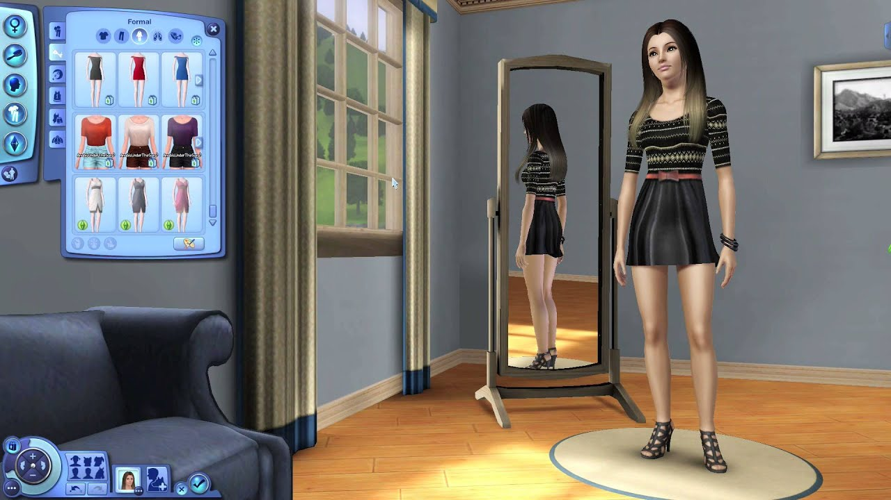
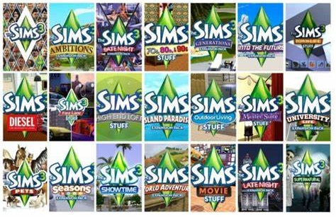

The Sims 2

In The Sims 2, managing Sims' basic needs—hunger, hygiene, social, fun, and energy—is crucial. Sims also have wants and fears that guide their behavior and aspirations. Each Sim has an aspiration (e.g., Family, Romance, Knowledge) influencing their goals. Fulfilling aspirations rewards Sims with aspiration points for special items. Players can form relationships, pursue careers, and develop skills that affect their job performance and daily life.
Create-a-Sim
Create-A-Sim in The Sims 2 offers players a robust toolset for designing unique Sims. Players can adjust facial features, body shapes, and clothing, with many options for hairstyles, skin tones, and outfits. Each Sim's personality traits (e.g., active, shy, playful) impact their behavior and interactions, influencing social dynamics and relationships. Additionally, players choose an aspiration for each Sim, which shapes their life goals and preferred activities.
DLCs
The Sims 2 features several expansion packs and stuff packs, adding new gameplay elements, items, and features. Notable expansion packs include University (2005), which introduced college life; Nightlife (2005), adding nightlife activities and dating; and Open for Business (2006), allowing players to own and manage businesses. Other expansions like Pets (2006) and Seasons (2007) introduced pets and seasonal changes, respectively.